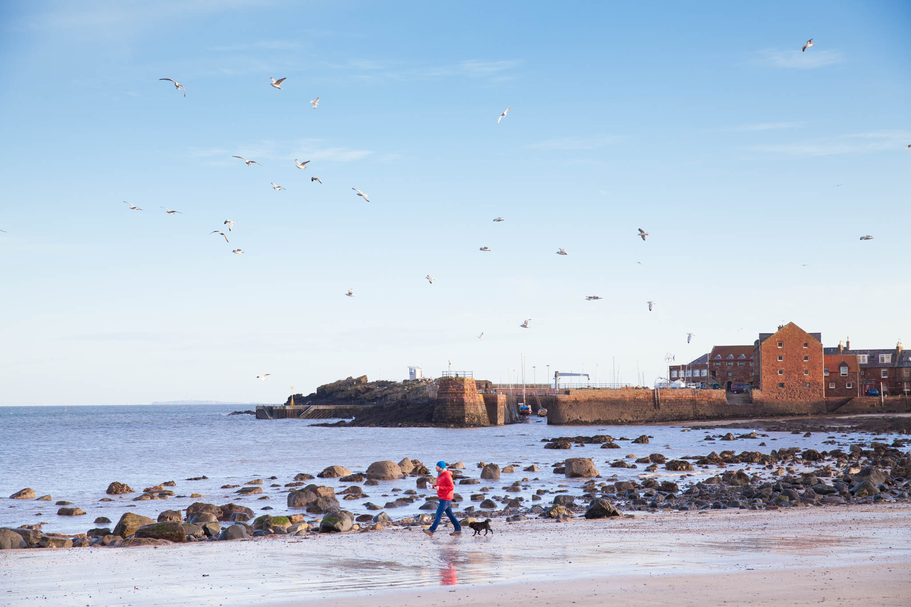
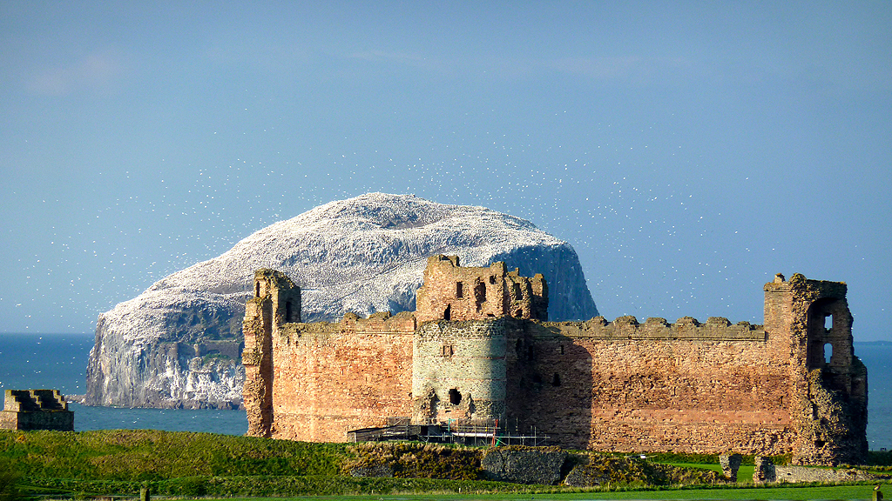

North Berwick，一译北贝里克，是苏格兰的一个海边小镇，距爱丁堡25公里。它从19世纪开始即成为热门的度假胜地。
记得带点面包，可以吸引到成群的海鸥。
North Berwick整个小镇的北边都是沙滩和海景，下了火车后站台有显眼的去往海边指示标，步行十分钟就到了。这里的海滩是苏格兰这边典型的黑岩和细砂，早晨有好多小镇的居民来这散步、遛狗。
离岸不远处的海中央，有一座大石头小岛，这就是小镇的标志性景点，Bass Rock。天气晴好的暖春，你能在岸上看到它密密麻麻地栖停了无数的海鸟，以至于整座岛变成了白色。

By Francis C. Franklin - Licensed under CC BY-SA 4.0
Bass Rock.
海边的游客中心有一个海鸟博物馆（Scottish Seabird Centre ），也是从此处可以坐船出海，绕行Bass Rock。在海边的街上有很多特色的艺术品商店，售卖明信片、马克杯、手工画和瓷器，你可以在其中90%的艺术品上找到那块白色的大石头。
另一个景点North Berwick Law是镇中央的一座小山。山顶曾在拿破仑时代和二战期间用于军事瞭望台，现在还留存遗迹。Berwick Law的登山有一定的挑战性，山道狭窄，山壁陡峭。不过登顶后可以俯瞰全景，因此也十分推荐一试。
By Honge - Licensed under Public Domain via Wikipedia
Tantallon Castle.
距离North Berwick往东5公里，是一座半遗弃的城堡，Tantallon Castle。城堡建成于十四世纪，三面临海，陡峭的悬崖是它天然的屏障，剩余一面建成了高墙，成为其坚固的防御。2008年曾有人在城堡中拍到灵异照片，一度流传了城堡的闹鬼奇闻。
海岩排屋也是North Berwick的一个特色。
此外，小镇周围还有海边高尔夫球场，East Lothian Yacht Club， 小镇还是John Muir Way海岸线的一个重要节点。即便不去这些，就在小镇闲逛，眼前延伸向地平线的是一片蓝海，或是坡起坡平的绿茵，突然就觉得心里的整个世界都突然安静了下来。
North Berwick很美，耽的起一日闲情。
Tips & Refs
- 从爱丁堡Waverley火车站坐车，约半小时可达。
- 海边城市风较大，春秋冬季注意带足防风衣物保暖。
- http://www.north-berwick.co.uk
- Wikipedia:Bass_Rock